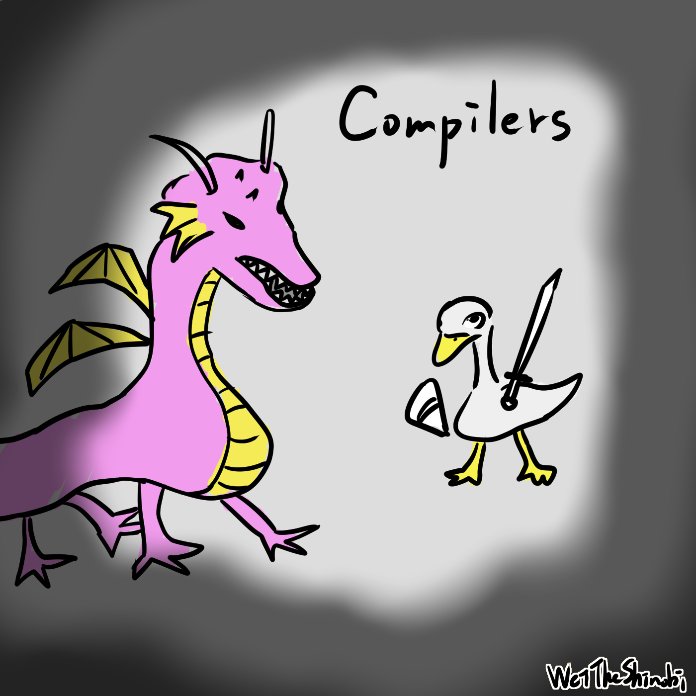

一起學習編譯器吧_01
一起學習編譯器吧_01
我記得以前聽大學的教授說過：「如果大學只能選一堂課，選編譯器」。最近在學習編譯器，這是系列文的第一篇，我想用費曼學習法來學習，簡單來說，就是要能夠將所學的東西解釋給不懂的人聽，我希望這個系列文能讓一般人也能夠理解，你可以當作有趣的科普，融會貫通後使用到其他地方。如果你對這個主題有興趣，可以看看最下方參考資料的書籍。
為了知道自己不知道
我們常常覺得自己什麼都會了，其實只是因為不知道自己不懂，這樣的無知會讓人充滿自信。其實我是覺得學習編譯器投資報酬率很高，可以有很多應用，舉例來說：整合開發環境（IDE） 在你一邊寫 Code 時就動態地為你檢查語法錯誤、做一些工具、學習計算思維和數學，學編譯器不一定要從事開發編譯器的工作，反正遲早要學會，不如早點學會。
編譯器是什麼
一開始，人類使用 01 序列來編寫程式，明確命令電腦要怎麼做，但是這樣容易出錯而且難讀，舉例來說：電腦有一套指令集，1001 代表加，1, 10 代表地址1, 地址2，一起輸入進去就會計算地址1的值 + 地址2的值。
後來人們有了組合語言：機器指令的別名，例如把 1001改名叫 ADD，這樣就會好寫好懂好讀，還有 macro（就是 C 語言中那個 #define），macro 簡單說就是把程式碼做替換，舉例：#define a x會把a替換成x，用程式寫出程式，然後不斷發展新特性至今，程式語言有了更多的抽象，這些高階語言翻譯成最底層的機器碼來執行。
編譯器把一個語言翻譯成另一個語言，這就像一套流水線一樣：
-
編譯器先把程式碼分解開來，像是變數、程式語言的關鍵字（if, for, int…）、常數、運算子（sizeof, +, -…）等等，方便後面更好動作。
-
處理空白和註解，這些是給人看的所以要刪掉；生成抽象語法樹，檢查文法有沒有正確，類型檢查，不同的類型要怎麼辦，像是 1 和 1.0 能夠一起運算嗎？需要轉型成整數嗎？或者不正確的類型就是報錯。
-
生成中間程式碼，最佳化程式碼，最重要的事必須確保意思是一樣的，不然毫無意義。
-
最後生成目標程式碼（不一定要是機器碼，像是 Java 虛擬機的字節碼等等，程式語言之間也能互相翻譯，例如 Kotlin 可以編譯成 Javascript）。
我們現在很抽象的說每個環節在做什麼，而每個環節的實作都是可以替換的，或者拆分開來，想要不同功能就替換某個實作即可。制定好抽象就確保了好的系統。
下回預告
一個簡單的語法制導翻譯器
參考資料
《编译原理》（Compilers: Principles, Techniques, and Tools）
《现代编译原理》（Modern Compiler Implementation in C）
WeiTheShinobi